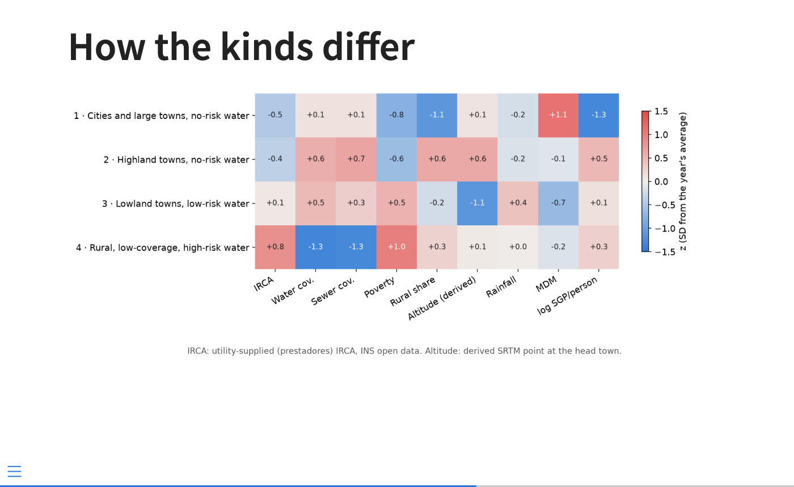
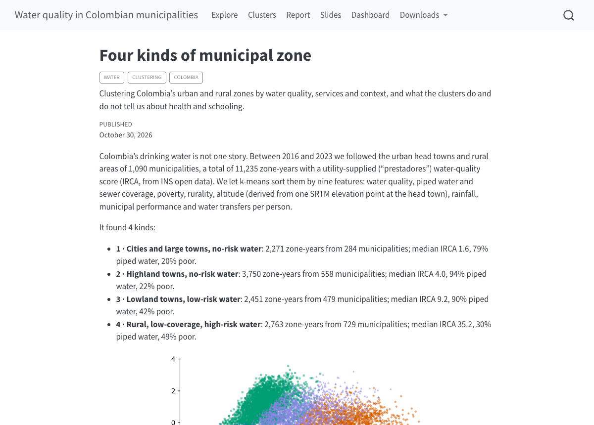

15 Publicar en muchos formatos
Quarto, publicación reproducible, agentes de programación, Markdown, Python, EPUB, análisis de datos, k-means
Los funcionarios van a leer los hallazgos como un informe, así que lo necesitan en los formatos que circulan en las oficinas: Word y PDF. El concejo municipal los va a ver en una pantalla durante una reunión, y va a buscar la conclusión en la última diapositiva. Los dos van a buscar dónde actuar, y cualquier otra persona necesita un enlace. Así que el proyecto recibe un informe, diapositivas y un sitio web con una entrada de blog, y ninguno de ellos puede calcular nada. Cada uno lee outputs/, y eso es lo que hace justa la última prueba del capítulo: cambia una opción del análisis, predice lo que sigue, reconstruye y comprueba que cada publicación lo siguió.
- Publicar un solo conjunto de resultados como un informe en Word y PDF, diapositivas para un concejo y, si quieres, un EPUB, sin que ninguna página vuelva a calcular el análisis.
- Configurar un sitio web que vuelve a ejecutar el análisis antes de cada renderizado, y explicar qué se perdería guardando en caché con
freeze: auto. - Proteger con una guarda una oración cuyas palabras dependen de los datos, y publicar el sitio en GitHub Pages.
- Predecir, comprobar y explicar qué salidas actualiza una opción que cambia, y cuáles no.
15.1 El informe, en Word y PDF
Crea report.qmd, en inglés (formatos html, docx, typst), a partir de outputs/: resumen, pregunta, datos (IRCA = IRCA de prestadores, utility-supplied prestadores IRCA), método, mapa de calor, variables de resultado, correlación ≠ causalidad (un gráfico de la mediana de infant_mortality por nivel del IRCA en cada clúster), límites, fuentes. Figuras de matplotlib con pie y texto alternativo; oculta el código. Renderiza todos los formatos; informa los errores.escribe report.qmd · uv run quarto render report.qmd
abres report.docx (Word o LibreOffice) y report.pdf
El prompt enumera las secciones del informe, y tres de sus decisiones llevan las lecciones de los últimos capítulos. “De prestadores” está en la sección de los datos porque la Sección 9.2 mostró lo que esconde la etiqueta. “Correlación ≠ causalidad” es una sección, no una nota al pie. Y las figuras son de matplotlib, porque Word, PowerPoint y PDF no pueden ejecutar el JavaScript que necesitan los gráficos interactivos de Plotly (Figura 15.1).
![La primera página del PDF del informe, en inglés, titulada Kinds of municipal zone in Colombia, con el subtítulo Water quality, services, poverty and outcomes, 2016 to 2023: a descriptive cluster analysis. Un resumen en cuatro viñetas dice cuántas zonas-año se agruparon en cuatro tipos, describe el tipo de mayor riesgo y el tipo con la mortalidad infantil más baja, y dice que las comparaciones son descriptivas y no establecen un efecto causal de la calidad del agua. Luego vienen la pregunta, la sección de los datos, que nombra el IRCA de prestadores, y el comienzo del método.](../media/figures/water-report-p1.png)
examples/water/report.qmd.
Cada número del texto es código en línea que lee outputs/, nunca escrito a mano: un informe que cita la cantidad de filas conservadas cita lo que el análisis haya calculado por última vez. Deberías tener report.html, report.docx y report.pdf, cada uno con el mapa de calor, las variables de resultado y la figura de la comprobación dentro de cada clúster.
¿Dos minutos sin avanzar? Pega esto en tu agente. Respalda tu trabajo y lleva el proyecto hasta este punto; luego sigue leyendo desde aquí.
Catch me up: follow ../quarto-workshop/checkpoints/10-water-report/README.md15.2 Diapositivas para el concejo
Crea slides.qmd, en inglés (revealjs y pptx), para el concejo municipal, 6 diapositivas con el título: la pregunta, una tabla de los clústeres con nombre, el mapa de calor, las variables de resultado por clúster, lo que esto muestra y lo que no. Lee outputs/, usa matplotlib, oculta el código. Renderiza los dos; cuenta las diapositivas.escribe slides.qmd · uv run quarto render slides.qmd
abres slides.html en tu navegador y slides.pptx en PowerPoint o LibreOffice
El agente debería contar seis diapositivas en cada uno, el título incluido. En los dos formatos, cada título ## empieza una diapositiva. Una diapositiva de PowerPoint contiene texto, o una figura, o una tabla, así que limita cada diapositiva a una sola cosa. La presentación para el concejo repite el mensaje de “solo descriptivo” en su última diapositiva, donde un concejo va a buscar la conclusión (Figura 15.2).

examples/water/slides.qmd.
¿Dos minutos sin avanzar? Pega esto en tu agente. Respalda tu trabajo y lleva el proyecto hasta este punto; luego sigue leyendo desde aquí.
Catch me up: follow ../quarto-workshop/checkpoints/11-water-slides/README.md15.3 El informe como libro electrónico (opcional)
En report.qmd, agrega un formato epub (toc: true), fija lang: en y agrega ePub a los `format-links` del html. Renderiza report.qmd y comprueba que report.epub contenga las tres figuras y las fuentes.Un EPUB es un conjunto comprimido de páginas web cuyo texto se reacomoda al tamaño de la pantalla del lector. La mayoría de los lectores de libros electrónicos no ejecutan JavaScript, así que las figuras tienen que ser imágenes estáticas, como ya lo son las del informe. lang: en registra el idioma del libro (sin él, el archivo declara uno desconocido), y toc: true agrega una tabla de contenidos. Abre el resultado en Libros, en una Mac, o en Calibre: debería contener las tres figuras y las fuentes.
El libro que tienes en las manos es lo mismo a una escala mayor, y construirlo mostró dónde deja de bastar un EPUB del tamaño de un informe. Las partes y las páginas de las partes desaparecen del EPUB de un libro de Quarto; el contenido marcado para HTML también aparece en el EPUB salvo que se marque para HTML con JavaScript; los colores de los recuadros y del código que trae Quarto desaparecen con el tema nocturno de un lector; y un validador de EPUB rechaza marcado que cualquier navegador acepta. El Apéndice H describe cada problema y su solución.
¿Dos minutos sin avanzar? Pega esto en tu agente. Respalda tu trabajo y lleva el proyecto hasta este punto; luego sigue leyendo desde aquí.
Catch me up: follow ../quarto-workshop/checkpoints/12-water-epub/README.md15.4 Un sitio web con un blog
Las publicaciones se convierten en un solo sitio web, con una entrada de blog que cuenta la historia en prosa:
- 1
-
Cada página, incluida una entrada en
posts/…/, leeoutputs/ydata/desde la carpeta del proyecto. - 2
-
Quarto ejecuta el análisis antes de cada renderizado, incluso el de una sola página:
outputs/siempre está al día. - 3
- Cada renderizado vuelve a ejecutar cada página, así que cada página muestra las salidas recién escritas.
# index.qmd
listing:
1 contents: posts- 1
-
Un listado convierte cada
posts/*/index.qmden una entrada de la página de inicio: un blog.
Convierte esta carpeta en un sitio web de Quarto, en inglés: _quarto.yml (execute-dir: project, `pre-render` scripts/analysis.py, freeze: false, lista render, barra de navegación), index.qmd con el listado de posts/, y una entrada titulada con el k real, por ejemplo "Four kinds of municipal zone". Renderízalo; revisa los enlaces.uv run quarto preview
La página de inicio de la vista previa debería enumerar una entrada, cuyo título dice el k real.
El título de la entrada dice la cantidad de clústeres, así que un cambio en el análisis podría dejarlo equivocado. La entrada terminada se protege con una línea en su celda de preparación, assert k == 4, que hace fallar el renderizado si el análisis encuentra alguna vez un k distinto (Figura 15.3). Esa línea es una guarda: detiene el renderizado cuando las palabras de una oración, no solo sus números, ya no coinciden con los datos, porque una falla ruidosa es mejor que una falsedad silenciosa. Este libro protege sus propias oraciones de la misma manera. La Sección 13.4 dice que la mortalidad infantil registrada más alta no está en el clúster con la peor agua; si los datos nuevos lo volvieran falso, el libro dejaría de construirse en lugar de imprimirlo.

examples/water/posts/four-kinds-of-municipal-zone/index.qmd.
15.4.1 ¿Al día o congelado?
freeze: false es la opción simple y segura: cada renderizado lo vuelve a calcular todo, así que nada puede quedar viejo. El costo es tiempo, en cada renderizado y para cada página. freeze: auto es la alternativa: Quarto guarda los resultados de cada página en _freeze/ y vuelve a ejecutar una página solo cuando cambia su propia fuente.
La trampa está en esa última frase. Quarto no sabe qué archivos lee una página, así que un cambio en data/ o en outputs/ no se detecta, y una página congelada conserva sus números viejos. Con freeze: auto necesitas una regla para descartar resultados: borra _freeze/ (o renderiza esa página directamente, lo que ignora el caché) cada vez que cambien los datos o el análisis.
Tu sitio usa freeze: auto. Cambias MAX_MISSING en scripts/analysis.py y ejecutas uv run quarto render. ¿Qué páginas muestran los números nuevos?
Solo las páginas cuya propia fuente cambió, y no cambiaste ninguna. pre-render igual reescribe outputs/, pero cada página congelada reutiliza sus resultados guardados, así que el sitio muestra los números viejos al lado de archivos de salida nuevos hasta que borres _freeze/ o renderices cada página por separado.
Empieza con freeze: false y cambia solo cuando los renderizados se vuelvan lo bastante lentos como para importar, y cuando lo hagas, escribe la regla para invalidar el caché donde la vaya a encontrar la próxima persona. Este libro usa freeze: auto, para que el EPUB se reconstruya rápido y de forma reproducible, y su regla está escrita en su configuración y en su README: después de cualquier cambio en los datos o en el análisis de los ejemplos, ejecuta make book-fresh, que borra _freeze/ y vuelve a ejecutar cada capítulo.
¿Dos minutos sin avanzar? Pega esto en tu agente. Respalda tu trabajo y lleva el proyecto hasta este punto; luego sigue leyendo desde aquí.
Catch me up: follow ../quarto-workshop/checkpoints/13-water-website/README.md15.5 Publícalo
Comprueba que .gitignore cubra _site/, .quarto/, .venv/, outputs/ y *_files/. Reemplaza el README.md de esta carpeta por uno corto, en inglés, que enlace a https://<your-github-username>.github.io/water-quality/ y enumere los archivos del menú Downloads del sitio. Haz commit de todo lo que no esté ignorado, luego crea con gh un repositorio público de GitHub llamado `water-quality` y haz push. Fija el sitio web del repositorio en la misma URL con `gh repo edit --homepage`. Muéstrame el README y la URL que configuraste.apruebas gh · cuando muestre la URL del sitio web, en la segunda pestaña: uv run quarto publish gh-pages, y luego Enter en “Publish site … (Y/n)” · abres la dirección en vivo
Los pasos son los de la Parte II (Sección 8.4). El repositorio existe desde la Sección 9.7, así que el push lleva todo el historial del análisis; su .gitignore también deja afuera outputs/, que reconstruye el paso previo al renderizado. En una prueba del 2026-11-01, la primera publicación tardó unos dos minutos, y luego GitHub Pages construyó el sitio en 20 a 35 segundos.
Los datos son públicos, y publicarlos con el sitio está bien, siempre que las atribuciones viajen con ellos. data/README.md enumera los términos de cada fuente: CC BY-SA 4.0 para la lista DIVIPOLA del DANE y las tablas del INS, el ICFES y el MEN, CC BY 4.0 para TerriData y CHIRPS, términos de cita para la población y los límites del DANE, y ninguno para SRTM. CC BY-SA agrega una condición CompartirIgual: cualquier cosa construida a partir de esos datos, como water_municipal.csv, debe compartirse con la misma licencia (CC BY-SA 4.0, consultada el 2026-11-12).
Mientras publica: ¿cuál es la diferencia entre tu carpeta y el sitio en vivo?
El sitio en vivo es el último _site/ que publicaste. Los cambios en tu carpeta, incluidas las salidas renderizadas de nuevo, no aparecen en línea hasta que vuelvas a publicar.
15.6 Cambia un dato de entrada, explica la reconstrucción
Esta es la segunda tarea sin prompt, y la prueba del diseño de esta parte.
MAX_MISSING descarta las filas a las que les faltan más de esa cantidad de las nueve características (Capítulo 11). Para responder, necesitas saber qué lee cada página. La Tabla 15.1 se calcula a partir de las fuentes del proyecto terminado: una página cuenta como lectora de un archivo solo si su código lo nombra.
posts/four-kinds-of-municipal-zone/index.qmd.
| Página | Lee outputs/ |
Lee data/ |
Escribe |
|---|---|---|---|
| index | ninguno | ninguno | html |
| explore | ninguno | water_municipal.csv |
html |
| clusters | 8 archivos | ninguno | html |
| report | 5 archivos | ninguno | html, docx, pdf, epub |
| whitepaper | 6 archivos | ninguno | |
| slides | 4 archivos | ninguno | html, pptx |
| dashboard | 7 archivos | municipios.geojson |
html |
| la entrada | 4 archivos | ninguno | html |
Todas las páginas menos dos leen sus números de outputs/. La página de exploración lee solo data/water_municipal.csv, que la opción no toca, así que se vuelve a ejecutar y muestra los mismos números; la página de inicio no lee ningún archivo. Una respuesta sólida nombra el mecanismo: pre-render vuelve a ejecutar el análisis, que reescribe cada archivo de outputs/, y freeze: false vuelve a ejecutar cada página que los lee. Revisa al menos dos salidas contra los nuevos conteos de filas. Y se da cuenta de lo que no cambió: data/, la página de exploración y el sitio en vivo. Una vez que tengas escrita tu predicción, compárala con la respuesta modelo del Apéndice E, que sigue a Tunja a lo largo de la reconstrucción con los números calculados (Tabla E.3).
15.7 Un dashboard y un documento técnico (opcional)
Un dashboard puede mostrar los clústeres en un mapa. El primer prompt construye un mapa coroplético de Plotly, un mapa cuyas áreas se colorean según un valor, aquí cada municipio según el nivel del IRCA de su zona urbana, con un control deslizante de años; el segundo agrega páginas para los tipos, las variables de resultado y el método:
Crea dashboard.qmd, en inglés (format: dashboard): un mapa coroplético de Plotly con el nivel del IRCA de las filas "urban" de outputs/clusters.parquet sobre data/municipios.geojson (featureidkey="properties.divipola"), un control deslizante de años sobre sus años (los frames solo actualizan z), una tabla de itables de outputs/clusters.parquet (maxBytes=0); termina cada celda de gráfico con `fig`. Que quede pulido: los niveles del IRCA en orden de sin riesgo a inviable, de claro a oscuro, con leyenda, tarjetas con título y etiquetas legibles. Agrégalo a la barra de navegación; renderiza, comprueba que se vea bien al tamaño de una laptop e informa los errores.Cuando la página del mapa se vea bien, el segundo prompt agrega las otras páginas:
Agrega a dashboard.qmd las páginas Kinds, Outcomes y Method, solo a partir de outputs/: un mapa de calor de las columnas `z_` de cluster_profiles.csv; las medianas de outcomes_by_year.csv por `year` y `cluster`, y la ρ de irca_infant.csv; la inercia y la silueta de k_selection.csv por k. Usa el `color` de cada clúster y las unidades de los ejes; di que es descriptivo, no causal. Renderiza; revisa cada página al tamaño de una laptop.![La página Map del dashboard, en inglés: cuatro cuadros de valor (zonas-año agrupadas, la cantidad de tipos, la mediana del IRCA urbano en 2023 y la proporción de zonas rurales muestreadas en los niveles alto o inviable), un mapa de los municipios de Colombia coloreados según el nivel del IRCA de su zona urbana, de claro para sin riesgo a oscuro para inviable, con un control deslizante de años, una tabla de los cuatro tipos con sus zonas-año y su mediana del IRCA, y una nota sobre los datos del mapa. Las pestañas llevan a las páginas Kinds, Outcomes, Method y Municipalities.](../media/figures/water-dashboard.png)
examples/water/dashboard.qmd.
Tres trampas, todas encontradas al construir el ejemplo. El archivo de límites sigue el estándar GeoJSON (anillos exteriores en sentido antihorario) y Plotly espera lo contrario, así que, si no se invierten los anillos, cada municipio se dibuja como “el mundo menos el municipio”, un rectángulo gris; el load_geojson() del script terminado los invierte. Los frames de la animación solo deben actualizar los colores (z): si cada año repite los 2.7 MB de límites, la página se infla. Y una celda de dashboard muestra cada expresión de primer nivel, no solo la última, así que un fig.add_vline(…) suelto dibuja el gráfico dos veces; asígnalo, fig = fig.add_vline(…), y termina la celda con fig.
La tabla con búsqueda necesita maxBytes=0, o itables descarta filas en silencio para mantener la página pequeña.
Las mismas salidas también se pueden convertir en un artículo académico, como las de Londres (Sección 8.6), ahora con ecuaciones numeradas ($$ … $$ {#eq-kmeans}, a las que se hace referencia como @eq-kmeans) y citas de los artículos detrás de cada método:
Crea whitepaper.qmd, en inglés, a partir de outputs/: A4 de Typst, "New Computer Modern"; un resumen (sin código en línea), Introduction, Methods con ecuaciones, Results y Conclusions numeradas, y luego References mediante `#set bibliography(title: [References])`. Cita las fuentes de data/README.md y los artículos de k-means, la silueta y el ARI en references.bib; abre cada DOI. Agrégalo a `render` y al menú "Downloads"; renderiza; revisa las ecuaciones y las citas. Las figuras tienen que ser vectoriales: fija `fig-format: svg` y comprueba que los archivos de `figure-typst/` terminen en .svg.“Abre cada DOI” está ahí por una razón: un agente puede producir una referencia plausible que no existe. Un DOI es el identificador permanente de un documento, y https://doi.org/ seguido de él abre la página de la editorial, así que es una prueba rápida de que una referencia existe. Pídele al agente que descarte cualquier referencia que no pueda abrir en lugar de adivinar, y revisa tú la lista de referencias. El artículo terminado cita a Lloyd (1982) para k-means, a Rousseeuw (1987) para la silueta, a Hubert y Arabie (1985) para el índice de Rand ajustado y a Pedregosa et al. (2011) para scikit-learn, cada uno revisado contra la página de su editorial el 2026-11-01.
examples/water/whitepaper.qmd.
¿Dos minutos sin avanzar? Pega esto en tu agente. Respalda tu trabajo y lleva el proyecto hasta este punto; luego sigue leyendo desde aquí.
Catch me up: follow ../quarto-workshop/examples/water/README.md15.8 Más desafíos
Estos no tienen puntos de control. Cada uno amplía el análisis con datos que ya están en el proyecto, o nombra uno que todavía no está disponible:
- Cambios entre tipos. Cuenta cómo pasan las zonas de los municipios de un clúster a otro entre 2016 y 2023, y dibújalo como un diagrama de Sankey (el
go.Sankeyde Plotly). - Desviados positivos. Encuentra municipios cuya zona rural está en el tipo de riesgo alto y que, aun así, tienen una mortalidad infantil registrada baja, y revisa primero si eso se debe a números pequeños, a vacíos o al subregistro.
- Otros agrupamientos. Un modelo de mezcla gaussiana le da a cada fila una probabilidad por clúster en lugar de una etiqueta fija; HDBSCAN encuentra grupos densos y deja sin agrupar los valores atípicos. ¿Sobreviven los tipos?
- Una mejor variable de resultado. La enfermedad diarreica en menores de cinco años es la variable de resultado más directamente ligada al agua. Su incidencia no está en los datos abiertos del SIVIGILA, el sistema de vigilancia en salud pública de Colombia, que solo publican las muertes; el README de los datos la registra como una fuente para agregar cuando esté disponible.
Resumen
- Cada publicación lee
outputs/y ninguna calcula, así que un solo análisis le llega a cada lector en el formato que usa: Word y PDF para los funcionarios, diapositivas para un concejo, un sitio web para cualquiera. - Word, PowerPoint, PDF y la mayoría de los lectores de libros electrónicos no pueden ejecutar JavaScript, así que sus figuras tienen que ser imágenes estáticas.
pre-rendervuelve a ejecutar el análisis antes de cada renderizado yfreeze: falsevuelve a ejecutar cada página, así que nada queda viejo;freeze: autoes más rápido pero no puede verdata/nioutputs/, así que necesita una regla escrita para vaciar_freeze/.- Una guarda convierte una oración que ya no coincide con los datos en un renderizado fallido en lugar de una falsedad silenciosa.
- El sitio en vivo es el último
_site/que publicaste, y solo cambia cuando vuelves a publicar. - Una opción que cambia llega a cada página que lee
outputs/y a nada más: predícelo, reconstruye y compruébalo.
Ese último ejercicio contiene el diseño de la parte, y es el método del libro a tamaño completo. El epílogo lo lleva de vuelta a sus tres verbos, y a un proyecto tuyo.
Lecturas adicionales
- Quarto, project scripts, freeze y website listings (consultados el 2026-10-30).
- Quarto, Reveal.js options, PowerPoint y EPUB options (consultados el 2026-10-30).
- Quarto, Dashboards (consultado el 2026-10-31).
- Quarto, cross-references y citations (consultados el 2026-11-01).
examples/water/README.mden el repositorio: la estructura del proyecto terminado, los pasos para reconstruirlo y las decisiones de diseño.